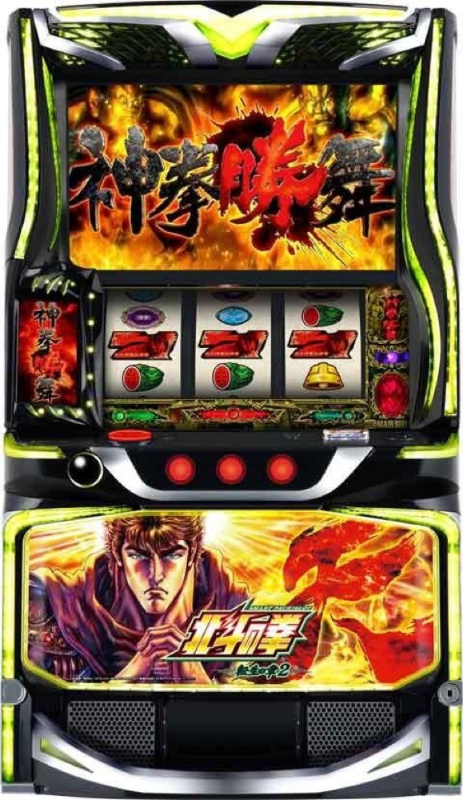

スマスロ 北斗の拳 転生の章2
30Gの闘神演舞で勝舞魂を集め、1魂ずつPUSH。天撃の先に裏闘神演舞。
- 導入
- 2026年1月
- メーカー
- サミー
- 分類
- パチスロ
主要スペック
闘神演舞30Gで勝舞魂を獲得し、神拳勝舞では勝舞魂1個につき1G・PUSH1回で継続を判定。天撃4Gから裏闘神演舞へ進み、赤勝舞魂とゲーム数アップまでを機種専用画面で体験できます。
- 闘神演舞は1セット30G・純増約4.0枚/G
- 神拳勝舞は勝舞魂1個につき1G・トータル勝率約1/5
- 勝利時の残り勝舞魂は次セットへ持ち越し
- 天撃は4G・成功期待度50%以上
スマスロ 北斗の拳 転生の章2の見どころと計算条件
闘神演舞30Gで勝舞魂を獲得し、神拳勝舞では勝舞魂1個につき1G・PUSH1回で継続を判定。天撃4Gから裏闘神演舞へ進み、赤勝舞魂とゲーム数アップまでを機種専用画面で体験できます。
北斗転生2を数字で早分かり
規定あべしから闘神演舞、裏闘神演舞までの流れと、設定ごとの結果差を固定レートで比較できます。
30秒で分かる北斗転生2
30Gで集めた勝舞魂を1個ずつ使い、勝つまでPUSHする自力継続型ATです。
こんな遊び方に向いている
- 勝舞魂が尽きる前に勝つ緊張感を楽しみたい
- 小役ごとの勝率差をPUSHで確認したい
- 天撃から裏闘神演舞を目指したい
遊ぶ前に確認したいこと
- ATゲーム数・純増・神拳勝舞の小役別勝率・天撃期待度は公開値
- 勝利時は残った魂を次セットへ持ち越し
- 未公表の魂獲得分布・ルート比率は体験用代表値
規定あべしから闘神演舞へ
通常時は規定あべし到達を軸にAT『闘神演舞』を目指します。AT初当りは設定1約1/366.0〜設定6約1/273.1。専用シミュレーターはSTART時に設定1〜6を均等抽選し、公開されている設定別初当り確率を使用します。
通常時のモード・天破の刻・前兆の全抽選は初当り確率へ集約し、初当り後から実機のAT順で進めます。
闘神演舞30Gで勝舞魂を獲得
闘神演舞は1セット30G＋α、純増約4.0枚/G。成立役と闘神レベルを参照して勝舞魂を獲得し、拳王強襲やSPバトルが絡むと魂の大量獲得にも期待できます。
専用画面では30Gのカウント後にPUSHで今回の勝舞魂を表示します。勝舞魂の細かな獲得分布は未公表部分があるため、公開されているゲーム構造に沿った体験用代表値です。
勝舞魂1個につき1Gの神拳勝舞
神拳勝舞は勝舞魂1個につき1G。1個ずつPUSHし、勝利するまで残り魂を減らします。勝利すれば残った勝舞魂を次セットへ持ち越し、0個まで敗北するとAT終了です。
トータル勝率は約1/5。小役別ではハズレ・10枚ベル約7.8%、リプレイ約26.2%、右下がりベル約32.0%、勝舞図柄約53.4%、スイカ約50%、チャンス目約75%、強チェリーは勝利濃厚という公開値を抽選へ反映します。
天撃から裏闘神演舞へ
天撃は突入ゲームを含む4Gで、成功期待度は50%以上。成功すると裏闘神演舞へ進みます。失敗後は天国移行が濃厚となり、次回初当りで上位へ進むルートがありますが、1回のシミュレーション内では天撃終了として集計します。
裏闘神演舞は初回70G＋赤勝舞魂2個から開始。以後は30〜300Gを獲得し、裏神拳勝舞の勝利時は残った赤勝舞魂に応じて次セットのゲーム数が上がります。
固定条件と簡略化する範囲
- 約31.5G/50枚・1,000円46枚貸し・5.2枚交換で固定
- 設定1〜6を均等抽選し、AT初当りと出玉率は公開設定別値を使用
- 30G闘神演舞、魂1個ずつの神拳勝舞、天撃、裏闘神演舞を専用進行
- 勝舞魂獲得個数、拳王強襲・SPバトル・天撃の到達配分など未公表部分は体験用代表値
- 19,000枚到達時はコンプリート表示
平均Gと投資目安の計算
掲載する闘神演舞初当り約1/366は設定1基準です。当サイトでは50枚あたり31.5G、1,000円46枚貸しの固定条件から、設定1基準の平均投資目安を約12,600円と計算します。
シミュレーターでは設定1〜6を均等抽選します。設定1〜6で公開されている初当り値を個別に使います。公開されていない特化ゾーン・上位到達率の設定差は加えません。 換金は5.2枚交換で固定し、結果とランキングに設定を表示します。
シミュレーション結果の見方
当るまで規定あべし・闘神演舞までのゲーム数
設定設定1・2・3・4・5・6から抽選された今回の設定
上位到達天撃と裏闘神演舞への到達
最終収支差枚と5.2枚交換の収支目安
結果は自動で「マイ記録」に保存され、同じ機種を何回試したか、最高収支、勝率をあとから確認できます。
簡易シミュレーターについて
規定あべし・闘神演舞・裏闘神演舞の流れを固定条件で体験できます。JavaScriptを有効にすると、この位置にシミュレーター、演出、マイ記録、機種別ランキングが表示されます。
結果は娯楽・確率理解のための参考表示です。金銭的価値や交換価値はなく、実際の勝敗や収支を保証しません。18歳未満の方の利用はお控えください。
北斗転生2のよくある質問
北斗転生2はどんな台？
闘神演舞30Gで勝舞魂を獲得し、神拳勝舞では勝舞魂1個につき1G・PUSH1回で継続を判定。 闘神演舞は1セット30G・純増約4.0枚/Gが主な確認ポイントです。
北斗転生2の平均投資目安は？
設定1基準の闘神演舞初当り約1/366と、50枚あたり31.5G・46枚貸しの固定条件から、平均12,600円を目安として表示します。実際の設定や遊技状況で結果は変わります。
設定とゲームの流れはどう抽選する？
開始時に設定1・2・3・4・5・6から1つを均等抽選し、規定あべし、闘神演舞、天撃、裏闘神演舞の順で到達を判定します。設定は最終結果とランキングに表示します。
収支はどう計算する？
1,000円46枚貸し・5.2枚交換の固定条件で投資、換金、収支目安を計算します。実店舗の再プレイ、持ちメダル、端数処理は含みません。